library(multienrichjam);
#>
library(jamba);
library(colorjam);
suppressPackageStartupMessages(library(igraph));
suppressPackageStartupMessages(library(ComplexHeatmap));
options("stringsAsFactors"=FALSE, "warn"=-1);Import Ingenuity IPA data
This document describes steps recommended for using Ingenuity Pathway Analysis (IPA) enrichment data.
Ingenuity IPA enrichment results should be exported from the IPA app:
Open an IPA pathway analysis result.
Click
"Export All"at the top-right of the menu bar.-
Choose either “Text .txt” or “Excel”.
- The Excel file must be
.xlsxformat.
- The Excel file must be
Save each enrichment result to a separate file.
This workflow demonstrates the import process using two IPA enrichment files used by Reese et al 2019 https://doi.org/10.1016/j.jaci.2018.11.043 to compare enrichment results in newborns to older children.
Import IPA data
To import an IPA text file, use importIPAenrichment().
It works the same when importing Excel .xlsx format.
newborn_txt <- system.file("extdata",
"Newborns-IPA.txt",
package="multienrichjam");
newborn_dfl <- importIPAenrichment(newborn_txt);The result is a list, named by the IPA analysis. Each
element contains one data.frame with analysis results.
Shown below is a summary of results, with number of rows and columns,
created with jamba::sdim().
sdim(newborn_dfl);
#> rows cols class
#> Canonical Pathways 113 8 data.frame
#> Upstream Regulators 117 7 data.frame
#> Diseases and Bio Functions 444 8 data.frame
#> Tox Functions 15 8 data.frame
#> Networks 8 8 data.frame
#> Tox Lists 19 7 data.frame
#> Analysis Ready Molecules 41 3 data.frameIn multienrichjam, you may want to analyze multiple IPA
analyses. The example below uses lapply() to import
multiple IPA files.
newborn_txt <- system.file("extdata",
"Newborns-IPA.txt",
package="multienrichjam");
olderchildren_txt <- system.file("extdata",
"OlderChildren-IPA.txt",
package="multienrichjam");
ipa_files <- c(Newborns=newborn_txt,
OlderChildren=olderchildren_txt)
ipa_l <- lapply(ipa_files, importIPAenrichment);A summary of the list of lists is shown below, using
jamba::ssdim():
ssdim(ipa_l);
#> $Newborns
#> rows cols class
#> Canonical Pathways 113 8 data.frame
#> Upstream Regulators 117 7 data.frame
#> Diseases and Bio Functions 444 8 data.frame
#> Tox Functions 15 8 data.frame
#> Networks 8 8 data.frame
#> Tox Lists 19 7 data.frame
#> Analysis Ready Molecules 41 3 data.frame
#>
#> $OlderChildren
#> rows cols class
#> Canonical Pathways 237 8 data.frame
#> Upstream Regulators 338 8 data.frame
#> Diseases and Bio Functions 500 8 data.frame
#> Tox Functions 118 8 data.frame
#> Networks 10 8 data.frame
#> Tox Lists 36 7 data.frame
#> Analysis Ready Molecules 162 3 data.frameAnalyze IPA enrichments from one enrichment test
IPA performs multiple types of analyis, and we recommend using one type for multienrichjam, starting with “Canonical Pathways”.
Other data available for use:
- “Canonical Pathways:: IPA curated pathways (most common*).
- “Upstream Regulators”: IPA curated regulators that are predicted to have ‘upstream’ effects in cell signaling.
- “Diseases and Bio Functions”: IPA curated disease-associated pathways, which include category and sub-category annotations.
- “Tox Functions”: IPA curated toxicity-associated pathways, which also include category and sub-category annotations.
“Analysis Ready Molecules”: is a
data.frame that contains the IPA gene cross-reference,
which stores what you called a gene, and what IPA
recognized for their analysis.
- The default
revert_ipa_xref=TRUEwill convert IPA gene symbol to your gene symbol as provided to IPA. - If you provided microarray or platform identifiers, such as
Affymetrix
'1007_s_at'or Agilent'ID A_14_P109686', you may tryrevert_ipa_xref=FALSE, which will retain the IPA gene symbol.
Extract ‘Canonical Pathways’ from each IPA result:
## Take only the Ingenuity Canonical Pathways
enrichList_canonical <- lapply(ipa_l, function(i){
i[["Canonical Pathways"]];
});
sdim(enrichList_canonical);
#> rows cols class
#> Newborns 113 8 data.frame
#> OlderChildren 237 8 data.frameConvert to enrichResult (optional)
Each data.frame can be converted to
enrichResult. It is not strictly necessary, but may be
useful to use with functions related to clusterProfiler,
for example ggtangle::cnetplot().
This option may be useful to review the conversion.
## Convert data.frame to enrichResult
## multienrichjam::enrichDF2enrichResult
er_canonical <- lapply(enrichList_canonical, function(i){
enrichDF2enrichResult(i,
keyColname="Name",
pvalueColname="P-value",
geneColname="geneNames",
geneRatioColname="Ratio",
pvalueCutoff=1)
});
sdim(er_canonical);
#> rows cols class
#> Newborns 113 12 enrichResult
#> OlderChildren 237 12 enrichResult
kable_coloring(
head(as.data.frame(er_canonical[[1]])),
caption="Top 10 rows of enrichment data",
row.names=FALSE) %>%
kableExtra::column_spec(column=seq_len(ncol(er_canonical[[1]])),
border_left="1px solid #DDDDDD",
extra_css="white-space: nowrap;")| ID | Ingenuity Canonical Pathways | -log(p-value) | zScore | GeneRatio | geneID | pvalue | geneNames.ipa | Description | p.adjust | Count | setSize |
|---|---|---|---|---|---|---|---|---|---|---|---|
| Role of Macrophages, Fibroblasts and Endothelial Cells in Rheumatoid Arthritis | Role of Macrophages, Fibroblasts and Endothelial Cells in Rheumatoid Arthritis | 0.405 | NaN | 0.00321 | TNFSF13B | 0.3935501 | TNFSF13B | Role of Macrophages, Fibroblasts and Endothelial Cells in Rheumatoid Arthritis | 0.3935501 | 1 | 312 |
| Neuroinflammation Signaling Pathway | Neuroinflammation Signaling Pathway | 0.406 | NaN | 0.00322 | CASP8 | 0.3926449 | CASP8 | Neuroinflammation Signaling Pathway | 0.3926449 | 1 | 311 |
| Sirtuin Signaling Pathway | Sirtuin Signaling Pathway | 0.428 | NaN | 0.00344 | HIST1H1D | 0.3732502 | HIST1H1D | Sirtuin Signaling Pathway | 0.3732502 | 1 | 291 |
| G-Protein Coupled Receptor Signaling | G-Protein Coupled Receptor Signaling | 0.447 | NaN | 0.00362 | PRKAR2B | 0.3572728 | PRKAR2B | G-Protein Coupled Receptor Signaling | 0.3572728 | 1 | 276 |
| Protein Ubiquitination Pathway | Protein Ubiquitination Pathway | 0.461 | NaN | 0.00377 | TAP2 | 0.3459394 | TAP2 | Protein Ubiquitination Pathway | 0.3459394 | 1 | 265 |
| Signaling by Rho Family GTPases | Signaling by Rho Family GTPases | 0.478 | NaN | 0.00397 | RDX | 0.3326596 | RDX | Signaling by Rho Family GTPases | 0.3326596 | 1 | 252 |
multiEnrichMap() to create ‘Mem’
Now given a list of data.frame results, we can run
multiEnrichMap():
mem_canonical <- multiEnrichMap(er_canonical,
enrichBaseline=1,
p_cutoff=0.05,
topEnrichN=10)Output is a list containing summary results.
kable_coloring(
sdim(mem_canonical),
caption="sdim(mem_canonical)") %>%
kableExtra::column_spec(column=seq_len(4),
border_left="1px solid #DDDDDD",
extra_css="white-space: nowrap;")| rows | cols | class | class_v2 | |
|---|---|---|---|---|
| enrichList | 2 | list | NA | |
| enrichLabels | 2 | character | NA | |
| colorV | 2 | character | NA | |
| geneHitList | 2 | list | NA | |
| geneHitIM | 68 | 2 | matrix | array |
| memIM | 22 | 11 | matrix | array |
| geneIM | 22 | 2 | matrix | array |
| enrichIM | 11 | 2 | matrix | array |
| multiEnrichDF | 11 | 11 | data.frame | NA |
| multiEnrichResult | 11 | 13 | enrichResult | NA |
| thresholds | 6 | list | NA | |
| headers | 9 | list | NA | |
| enrichIMcolors | 11 | 2 | matrix | array |
| enrichIMdirection | 11 | 2 | matrix | array |
| enrichIMgeneCount | 11 | 2 | matrix | array |
| geneIMcolors | 22 | 2 | matrix | array |
| geneIMdirection | 22 | 2 | matrix | array |
| .__classVersion__ | 1 | Versions | NA |
prepare_folio() to create ‘MemPlotFolio’
The next step is to prepare the “Mem Plot Folio”, which performs key pathway clustering to inform downstream visualizations.
-
prepare_folio()prepares a ‘MemPlotFolio’ object -
mem_plot_folio()prepares and plots ‘MemPlotFolio’ as multi-page output.
The plot data is created and stored in the ‘MemPlotFolio’ object, and can be plotted directly using:
-
EnrichmentHeatmap(): pathway by enrichment, showing enrichment P-values -
GenePathHeatmap(): genes by pathway, to define pathway clusters -
CnetCollapsed(): Concept network (Cnet) collapsed by pathway cluster -
CnetExemplar(): Cnet with one exemplar pathway per cluster -
CnetCollapsed(): Cnet showing all pathways in one cluster
The example below shows the first four plots from
mem_plot_folio():
Mpf <- mem_plot_folio(mem_canonical,
pathway_column_split=4,
column_cex=0.4, row_cex=0.4,
row_names_max_width=grid::unit(9, "cm"),
column_names_max_height=grid::unit(4, "cm"),
node_factor=2.5,
label_factor_l=list(nodeType=c(Set=0.7, Gene=1.5)),
use_shadowText=TRUE,
do_which=c(1, 2, 3, 4),
main="Canonical Pathways");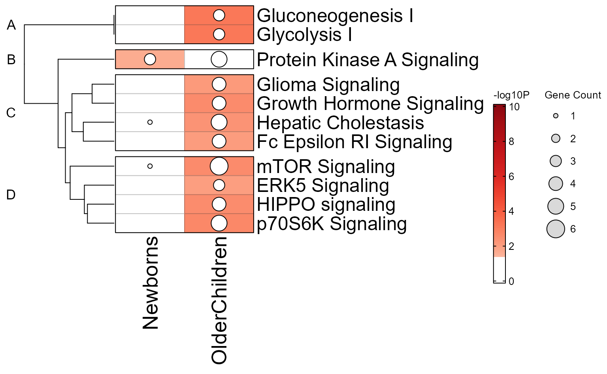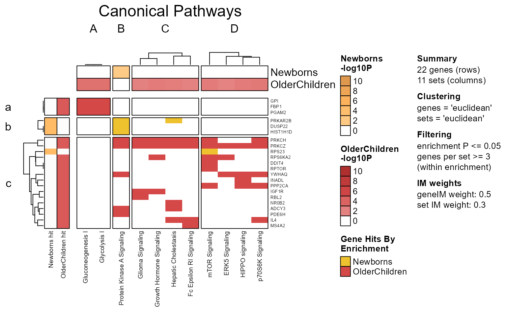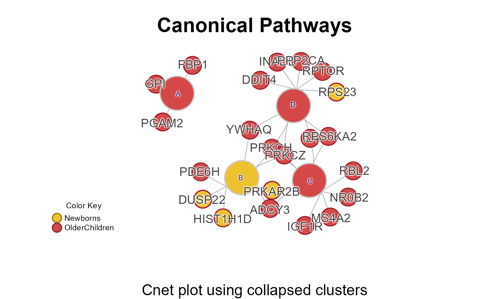
The object Mpf is a 'MemPlotFolio' object
containing graphical objects. By default all plots in
do_which are plotted, however they can be plotted
individually:
Customizing Mem Plots
Cnet Collapsed Plot
The Cnet Collapsed Plot is often the focus of manuscript figures. The
typical workflow is demonstrated below, using
CnetCollapsed() on the MemPlotFolio
object.
Note that ‘…’ extra arguments are passed to jam_igraph()
for custom plotting options.
# generate the data
Mpf4 <- prepare_folio(mem_canonical,
do_which=c(4))
# extract the cnet
cnet <- CnetCollapsed(Mpf4,
type="set",
node_factor=2,
use_shadowText=TRUE,
label_factor_l=list(nodeType=c(Gene=2, Set=1)))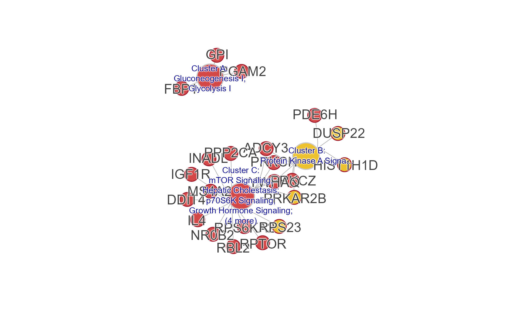
## jam_graph()
# jam_igraph(cnet)Enrichment P-value Heatmap
The recommended way to create an enrichment heatmap is to use
EnrichmentHeatmap(Mpf) with the 'MemPlotFolio'
object. Customization should be done via mem_plot_folio(),
for example changes to pathway clustering, and even custom font
sizes.
Additional options for a enrichment heatmap are described in the
internal function mem_enrichment_heatmap().
EnrichmentHeatmap(Mpf);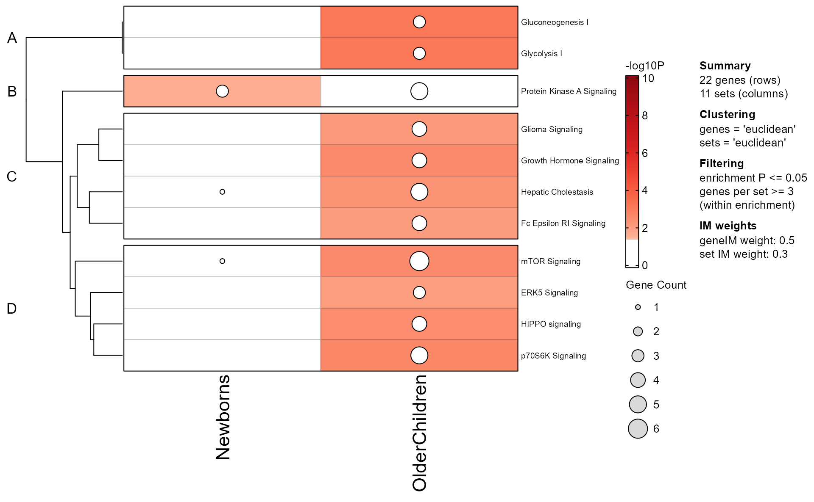
Note that the Mem object can be plotted directly as follows:
mem_enrichment_heatmap(mem_canonical,
p_cutoff=0.05);
The same data can be plotted as a heatmap.
mem_enrichment_heatmap(mem_canonical,
style="heatmap",
p_cutoff=0.05);
Argument color_by_column=TRUE applies the color gradient
to each column, using colorV colors defined in from
multiEnrichMap().
memhm <- mem_enrichment_heatmap(mem_canonical,
style="heatmap",
color_by_column=TRUE); 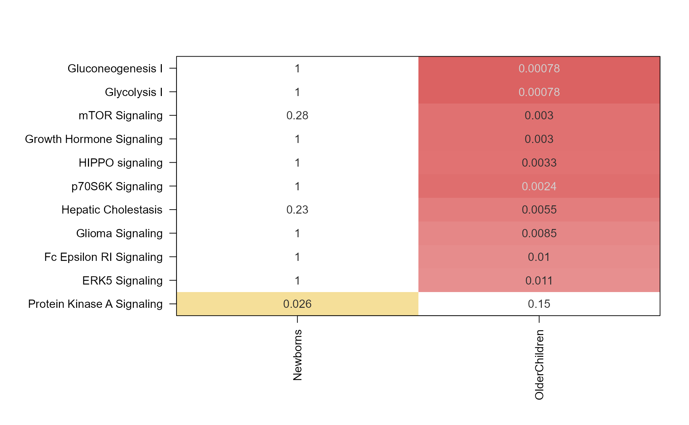
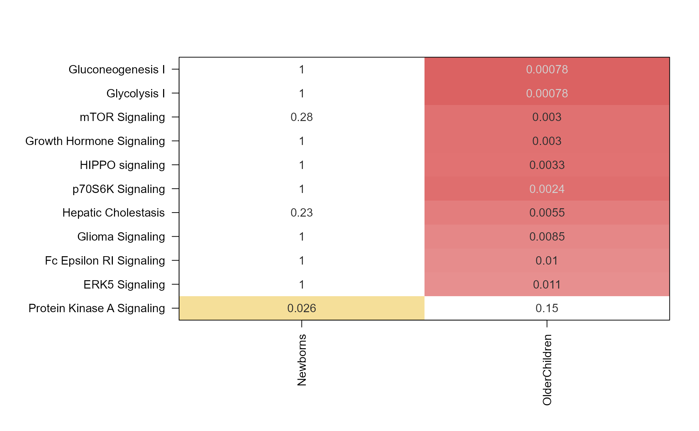
Any of these custom options can be passed to
mem_plot_folio(), so that the enrichment heatmap will
follow that custom style.
Gene-Pathway Heatmap
The gene-pathway heatmap is the critical step in downstream analysis,
and is visualized with GenePathHeatmap(Mpf) using the
‘MemPlotFolio’ object.
Additional options for the gene-pathway heatmap are described in the
internal function mem_gene_path_heatmap().
- Colors across the top of the heatmap indicate enrichment P-values.
- Colors on the left of the heatmap indicate which genes were present in each enrichment test.
- When directional gene hits are provided, the left of the heatmap will also indicate directionality.
hm_drawn <- GenePathHeatmap(Mpf);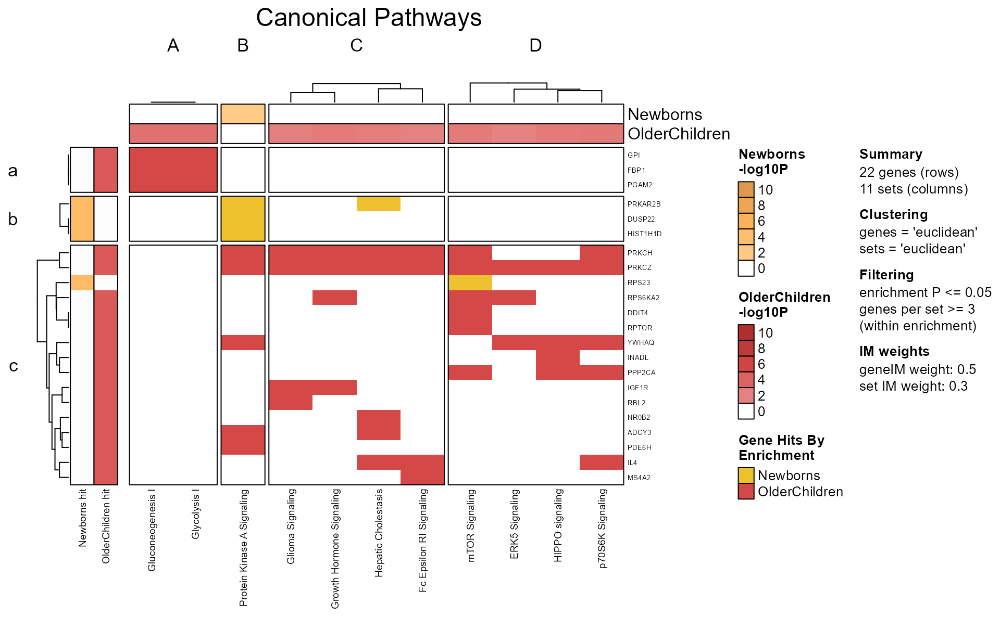
You can pull out pathway clusters using Clusters(Mpf),
and gene clusters using GeneClusters(Mpf).
Alternatively, since hm_drawn is also a ComplexHeatmap
object, the row and column order can be interrogated using
jamba::heatmap_column_order() for example.
hm_sets <- heatmap_column_order(hm_drawn);
hm_sets;
#> $A
#> Gluconeogenesis I Glycolysis I
#> "Gluconeogenesis I" "Glycolysis I"
#>
#> $B
#> Protein Kinase A Signaling
#> "Protein Kinase A Signaling"
#>
#> $C
#> Glioma Signaling Growth Hormone Signaling
#> "Glioma Signaling" "Growth Hormone Signaling"
#> Hepatic Cholestasis Fc Epsilon RI Signaling
#> "Hepatic Cholestasis" "Fc Epsilon RI Signaling"
#>
#> $D
#> mTOR Signaling ERK5 Signaling HIPPO signaling p70S6K Signaling
#> "mTOR Signaling" "ERK5 Signaling" "HIPPO signaling" "p70S6K Signaling"Full Cnet plot
The complete Concept network (Cnet) plot shows every pathway-gene
relationship, and is performed using mem2cnet().
Note that the pathways can be subset using [ bracket
notation if relevant.
cnet <- mem2cnet(mem_canonical)
withr::with_par(list(mar=c(1, 1, 1, 1)+0.1), {
jam_igraph(cnet,
use_shadowText=TRUE,
node_factor=0.5,
vertex.label.cex=0.6);
mem_legend(mem_canonical);
})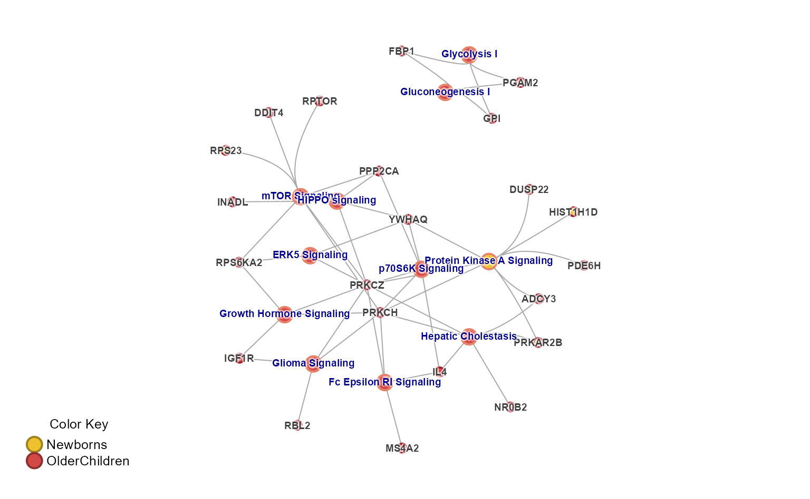
Extract the largest connected subnetwork.
cnet_largest_sub <- subset_igraph_components(cnet, keep=1)
jam_igraph(cnet_largest_sub,
use_shadowText=TRUE,
label_factor=0.5,
node_factor=0.5);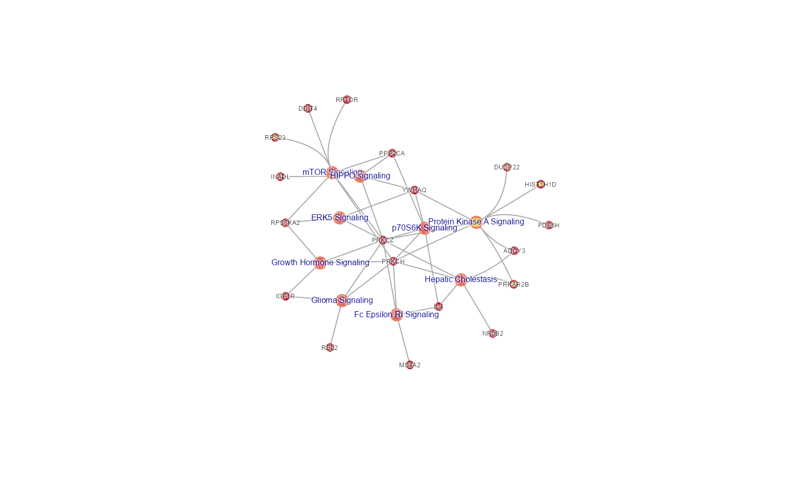
Subset Cnet by Cluster
Subset the pathway nodes with subsetCnetIgraph(), using
hm_sets defined above.
cnet_sub <- subsetCnetIgraph(cnet,
repulse=3.5,
includeSets=unlist(hm_sets[c("A")]));
jam_igraph(cnet_sub,
node_factor=1,
use_shadowText=TRUE,
label_dist_factor=3,
label_factor=1.3);
mem_legend(mem_canonical);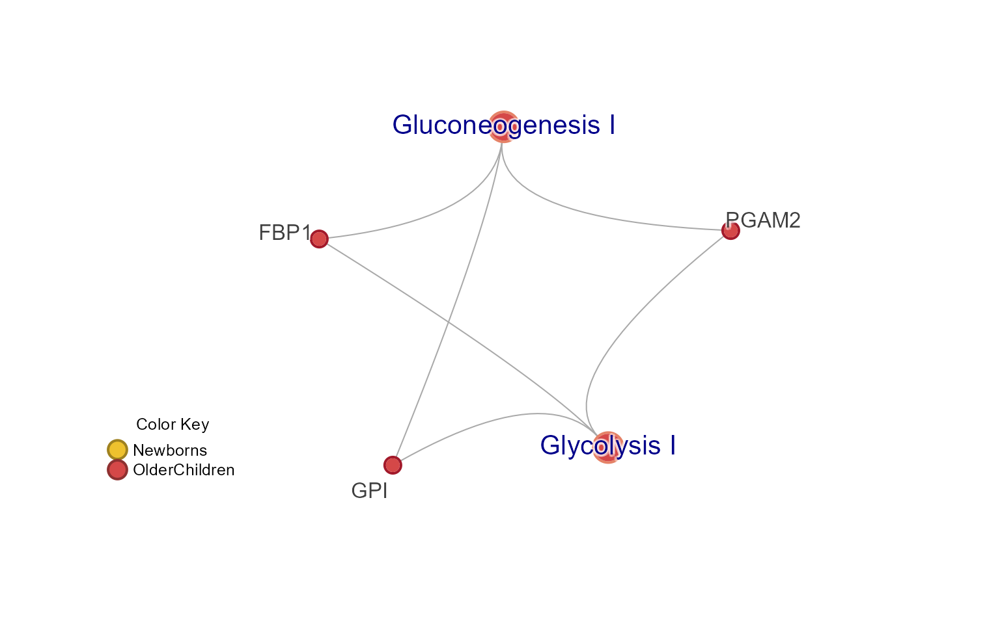
Subset Cnet Options
Subset the pathway nodes with subsetCnetIgraph(), using
a custom subset of pathways.
Alternatively, subset by other network attributes:
-
minSetDegree=6: pathways with at least 6 genes -
minGeneDegree=2: genes present in 2 or more pathways (not used here).
Other useful defaults:
-
remove_singlets=TRUE: remove singlet nodes with no connections. -
force_relayout=TRUE: re-calculated the layout. -
do_reorder=TRUE: re-order nodes by color. -
spread_labels=TRUE: re-position labels away from incoming edges -
remove_blanks=FALSE: optionally remove blank colors from pie nodes.
cnet3 <- multienrichjam::subsetCnetIgraph(cnet,
repulse=5,
minSetDegree=6,
minGeneDegree=1);
jam_igraph(cnet3,
node_factor=0.7,
use_shadowText=TRUE);
mem_legend(mem_canonical);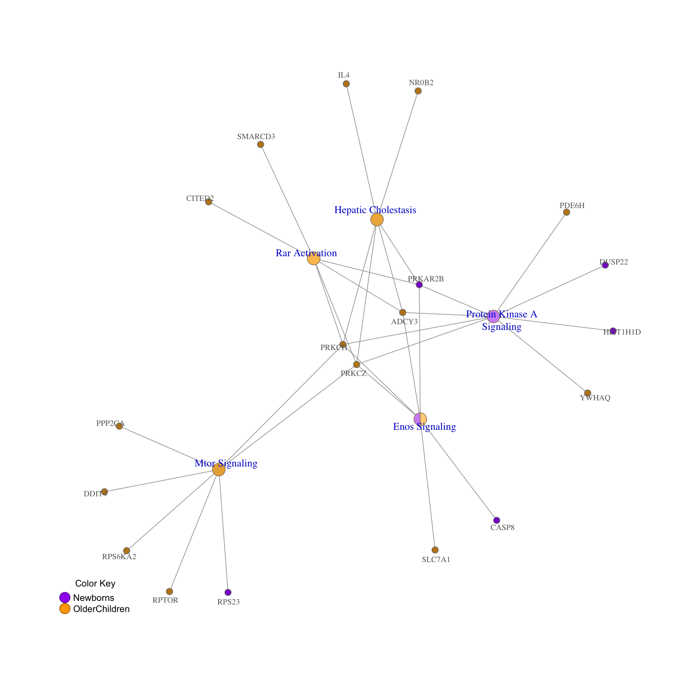
Multi-Enrichment Map
The “Multi Enrichment Map” itself can be view using
mem2emap().
This network connects pathways when they meet a Jaccard overlap coefficient threshold based upon the shared genes between the pathways.
The default 0.2 is stored in the ‘Mem’ object
mem_canonical.
emap <- mem2emap(mem_canonical)
jam_igraph(emap,
node_factor=2,
use_shadowText=TRUE)
title(main="overlap=0.2")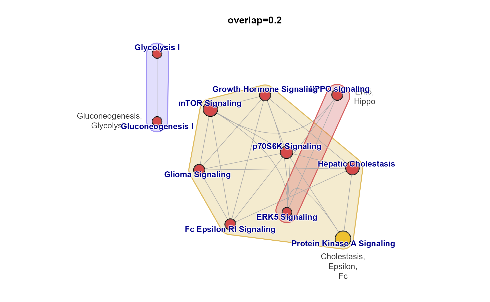
You can provide the Jaccard overlap threshold directly, with argument
overlap. Values should be between 0 and 1.
A reasonable threshold can be estimated with
mem_find_overlap(), which determines an intermediate level
of connectivity, and should be a solid starting point for future
adjustments.
use_overlap <- mem_find_overlap(mem_canonical);
emap2 <- mem2emap(mem_canonical,
overlap=use_overlap)
jam_igraph(emap2,
node_factor=3,
use_shadowText=TRUE)
title(main=paste0("overlap=", use_overlap))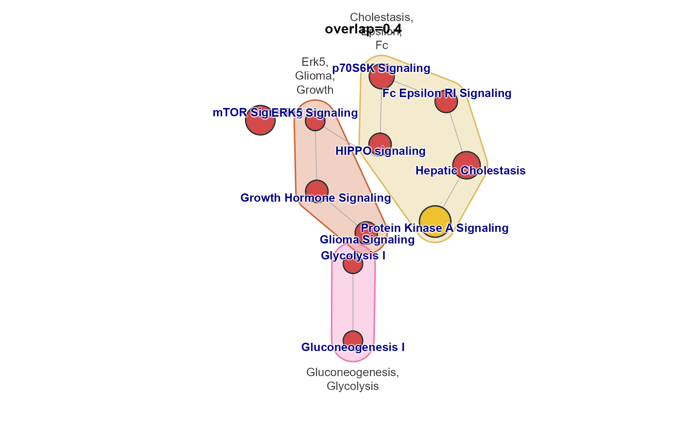
Notice there are distinct subnetworks, called “components”, which are not connected to each other.
You can pull out a component with
subset_igraph_components(). Components are ordered by size,
largest to smallest, so you can keep the largest using argument
keep=1, or the second largest with keep=2, and
so on.
We also call two other helper functions:
-
- removes blank colors from multi-color nodes, such as pie nodes, or colored rectangle nodes.
- It helps show only the remaining colors without the whitespace.
-
- Fruchterman-Reingold layout, with argument
repulseused to adjust the spacing between nodes. - Also updates other useful attributes, and spreads the node labels to reduce label overlaps.
- Fruchterman-Reingold layout, with argument
## You can alternatively pull out any other component
g_sub <- subset_igraph_components(emap2, keep=1);
## Re-apply network layout, and remove blank colors
g_sub <- relayout_with_qfr(repulse=3.5,
removeIgraphBlanks(g_sub))
## Plot
jam_igraph(g_sub,
node_factor=3,
label_factor=2,
use_shadowText=TRUE)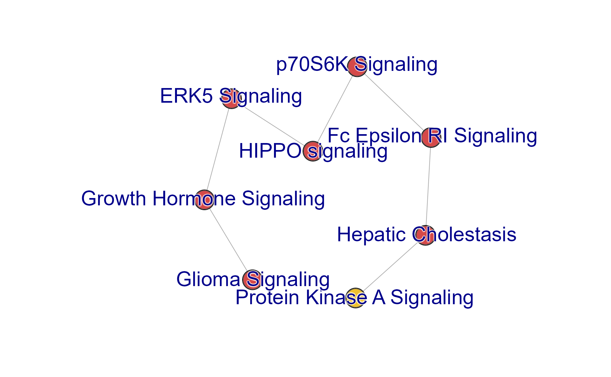
jam_igraph() to plot igraph
jam_igraph() is a customized
igraph::plot(), with benefits:
edge_bundling="connections"(default) improves the rendering of edges by bundling edges from node clusters, so they are drawn with a bezier curveuse_shadowText=TRUE(optional) will draw labels with a contrasting border to improve legibility of text labelsrescale=FALSE(default) keeps the network layout aspect ratio instead of scaling the coordinates to fit the size. of the plot window. It also properly scales the node and edge sizes.-
convenient resizing:
-
label_factor: adjustslabel.cexby a multiplier -
node_factor: adjustsnode.sizeby a multiplier -
edge_factor: adjustsedge.widthby a multiplier -
label_dist_factorre-scales thelabel.distvalues by a multiplier
-
Simple resizing
Consider the following changes, demonstrated below:
-
node_factor=2: nodes 2x larger -
edge_factor=2: edges 2x wider -
label_factor=1.2: labels 20% larger -
use_shadowText=TRUE: shadow text labels -
label_dist_factor=5: label distance 5x farther from node center
jam_igraph(cnet3,
node_factor=2,
edge_factor=2,
label_factor=1.2,
label_dist_factor=5,
use_shadowText=TRUE)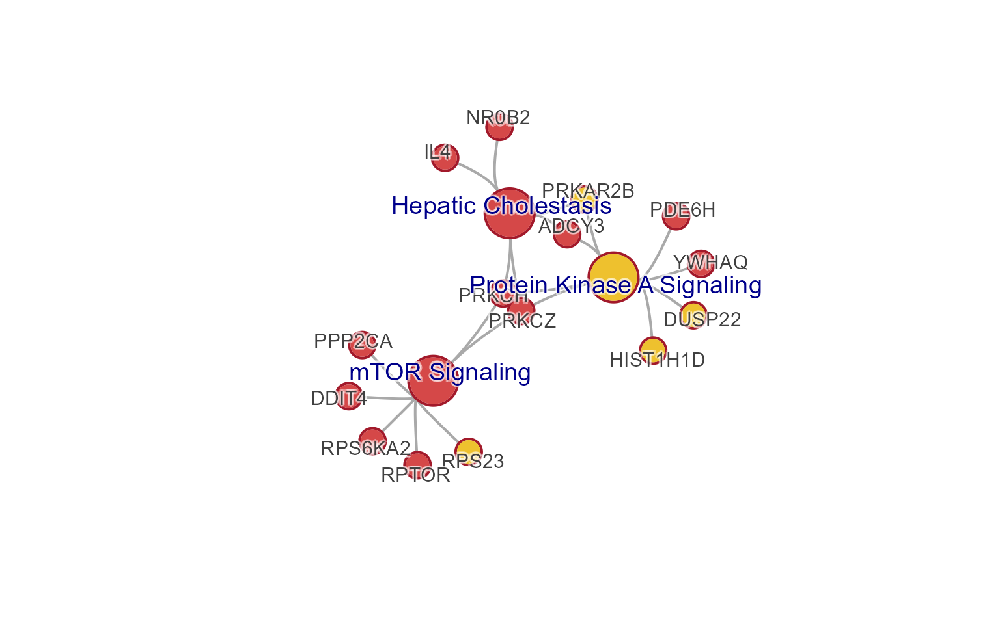
Colored edges
Edges can be colorized using the colors of the connecting nodes, a
visual enhancement inspired by the Gephi network visualization tool.
This process is performed using color_edges_by_nodes().
jam_igraph(color_edges_by_nodes(cnet3, alpha=0.7),
edge_bundling="connections",
# edge_factor=2,
# node_factor=2,
label_factor=1.2,
label_dist_factor=5,
use_shadowText=TRUE)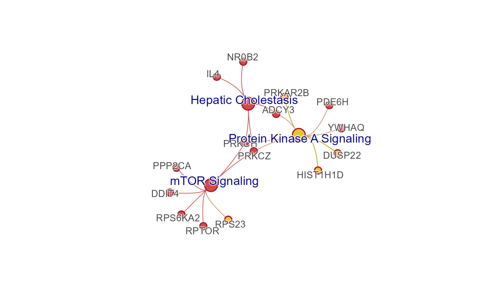
ShinyCat for Custom Cnet Layout
The R-shiny Cnet Adjustment Tool ShinyCat is intended to help polish the Cnet plot layout when making a final figure.
The R-shiny app uses several functions:
-
nudge_igraph_node(): mode individual nodes -
adjust_cnet_nodeset(): adjust spacing, position, rotation of a nodeset -
reorder_igraph_nodes(): sort nodes in a group by color -
spread_igraph_labels(): arrage labels radially away from incoming edges -
bulk_cnet_adjustments(): several operations applied in bulk
Make sure to assign the output to a variable, or to click “Save RData” from within the R-shiny app. For example:
output_env <- launch_shinycat(g=cnet)The output is stored in an environment called
output_env.
# obtain the output data
adj_cnet <- output_env$adj_cnet;Then the new Cnet plot can be plotted, for example:
# jam_graph
jam_igraph(adj_cnet,
node_factor=2,
use_shadowText=TRUE,
label_factor_l=list(nodeType=c(Gene=2, Set=1)))